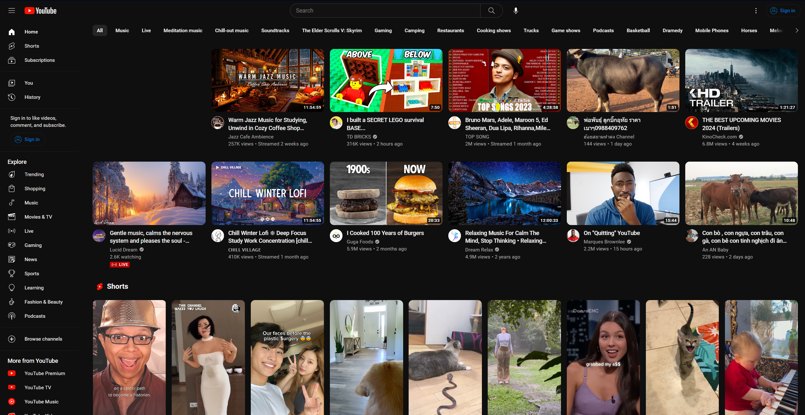
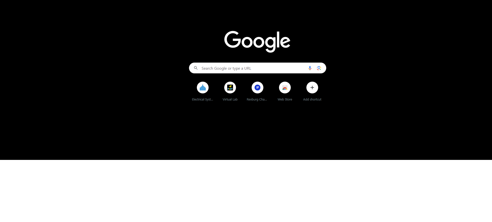
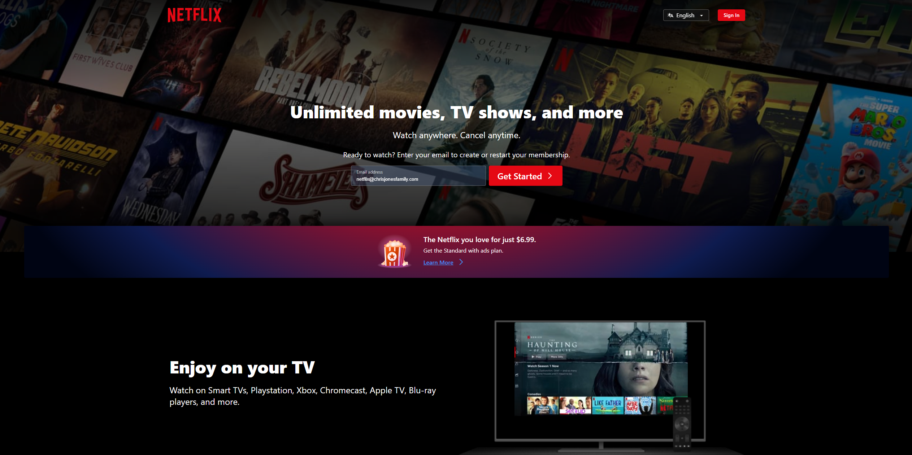

Visual Hierarchy
Youtube
Youtube.com

Youtube exemplifies this principle, by how it organizes the information on the page. With how the thumbnails are first giving you visual information about what is happening, then the title and otehr factors such as views and etc.
These will pull you in. BUt also other things on the screen such as tabs on the top, tabs on the left, there are even shorts.
Hick's Law
Google
Google.com

Google exemplifies Hick's Law by presenting you with a clean and minimalistic design that focuses on a single primary action—performing a search. There are very few distractions or choices on the homepage.
PARC: Contrast
Netflix
Netflix.com

The use of contrasting colors like Black and white makes it easy on the eyes. While also using other colors like Red and blue and
purples also provide a nice contrast. You can also tell clearily where everything, where to begin and where to get information.